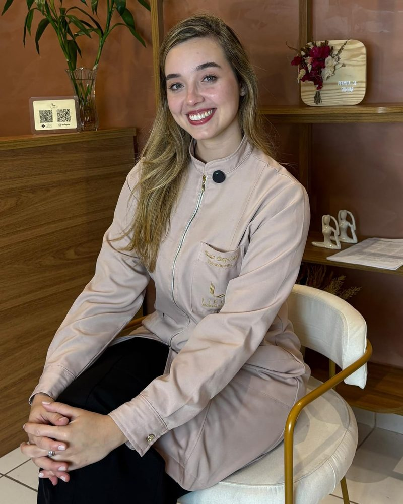
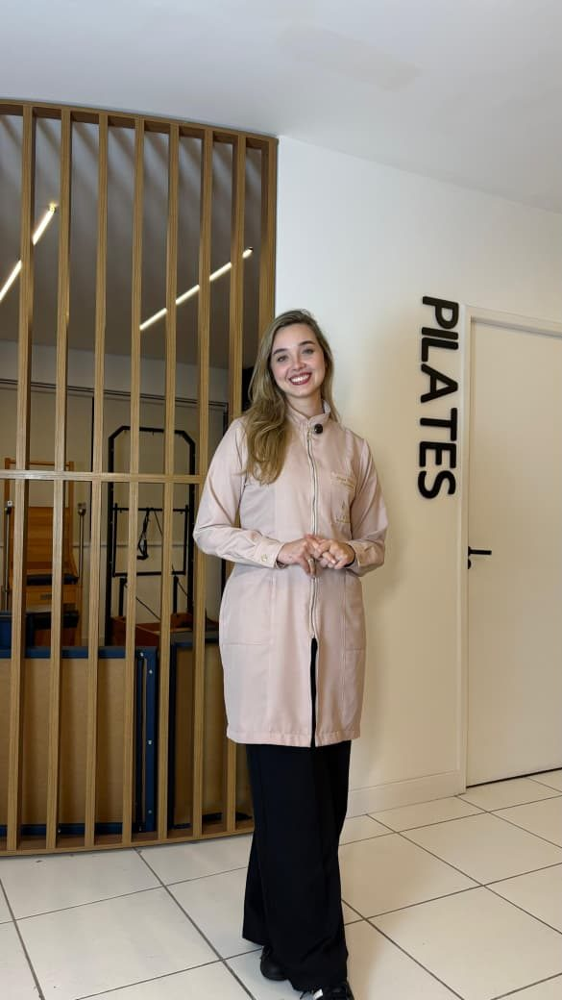
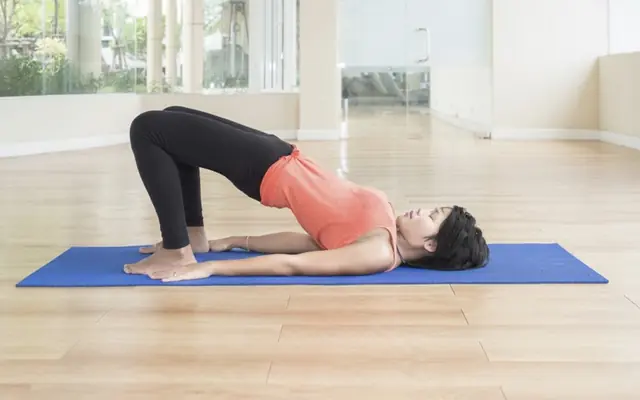

5 mitos sobre incontinência urinária
Os principais mitos e verdades sobre a incontinência e como a fisioterapia pode ajudar.
Fisioterapia pélvica · Juiz de Fora – MG
Atendimento individualizado e acolhedor, com escuta atenta e um plano de tratamento pensado para você.
Segunda a sexta, das 8h às 18h

Como posso ajudar
Muitas mulheres convivem com esses sintomas por anos, achando que fazem parte da vida. Eles merecem atenção, e conversar sobre isso é o primeiro passo.
Escapes ao tossir, espirrar, rir, pegar peso ou fazer exercício, ou vontade urgente de ir ao banheiro.
Fisioterapia pélvicaPreparar o corpo para as mudanças da gravidez e para o parto, com mais conforto e segurança em cada etapa.
Saúde da mulherRetomar a confiança no próprio corpo depois da gestação, cuidando do assoalho pélvico e da postura.
Saúde da mulherDor, desconforto ou outras dificuldades na vida íntima, tratadas com respeito e sigilo.
Fisioterapia pélvicaPressão, peso ou sensação de “bola” na vagina, que pode estar relacionada ao prolapso.
Fisioterapia pélvicaVontade de fortalecer a musculatura pélvica e melhorar a postura e a flexibilidade.
Pilates clínicoAs informações deste site são educativas e não substituem uma avaliação individual. Só a avaliação permite indicar o tratamento adequado para o seu caso.
Tratamentos
Explicados de forma simples, para você saber o que esperar antes mesmo da primeira conversa.
Tratamento do assoalho pélvico, o conjunto de músculos que sustenta a bexiga, o útero e o intestino.
Acompanhamento fisioterapêutico nas diferentes fases da vida feminina.
Exercícios orientados pela fisioterapeuta e adaptados às suas necessidades.
Consultas e tratamentos realizados no conforto da sua casa.

Sobre mim
Sou fisioterapeuta formada pela Faculdade de Ciências Médicas e da Saúde (Suprema), de Juiz de Fora – MG. Pós-graduada em Uroginecologia e Obstetrícia, atuo no cuidado à saúde da mulher, com foco na promoção de qualidade de vida, autonomia e bem-estar em todas as fases da vida feminina.
Minha prática clínica é baseada em uma abordagem humanizada, individualizada e fundamentada em evidências científicas, respeitando a história, as necessidades e os objetivos de cada paciente. Acredito que o tratamento vai além do físico, envolvendo escuta ativa, acolhimento e educação em saúde.
Além da fisioterapia pélvica, também atuo com Pilates, integrando o método ao tratamento e à prevenção de disfunções, visando melhora da consciência corporal, funcionalidade, força e controle do movimento. Meu compromisso é oferecer um atendimento ético, seguro e acolhedor, para que cada mulher se sinta confiante, informada e protagonista do próprio corpo.
Conversar com a BrunaO atendimento
Um espaço seguro para falar sobre temas íntimos, sem julgamentos.
O plano parte da sua avaliação, da sua rotina e dos seus objetivos, com base em evidências científicas.
Cuidado dedicado a saúde pélvica feminina e bem-estar.
Atendimento presencial ou, quando se deslocar é difícil, no conforto da sua casa.
Passo a passo
Você entra em contato pelo WhatsApp e escolhemos juntas o melhor horário.
Conversamos sobre seu histórico, suas queixas e seus objetivos, e é feita a avaliação fisioterapêutica.
Definimos uma estratégia adequada ao seu caso, e tudo é explicado antes de começar.
Sua evolução é acompanhada de perto ao longo das sessões.
Revisamos juntas os resultados e os próximos passos.
Depoimentos
PREENCHER: texto do depoimento real
Blog
Informação clara para você entender melhor o seu corpo.
Os principais mitos e verdades sobre a incontinência e como a fisioterapia pode ajudar.
Como a fisioterapia pélvica contribui para a recuperação e o bem-estar no pós-parto.

A conexão entre o Pilates e o fortalecimento do assoalho pélvico.
Dúvidas frequentes
Não encontrou sua dúvida? Pergunte pelo WhatsApp, sem compromisso.
Pelo WhatsApp (21) 97695-2733 ou pelo formulário de contato desta página. Juntas, escolhemos o melhor dia e horário.
Começamos com uma conversa sobre seu histórico, suas queixas e o que você espera do tratamento. Em seguida é feita a avaliação fisioterapêutica e explico o plano proposto. Você pode tirar dúvidas a qualquer momento.
Sim, e é muito comum. Queixas como perda de urina ou dor na relação sexual são mais frequentes do que se imagina. O atendimento é feito com respeito, sigilo e no seu tempo.
Os atendimentos são em Juiz de Fora – MG, presencialmente na Liberi Fisioterapia Especializada (R. Santo Antônio, 1340 – Centro) ou em domicílio. Pelo WhatsApp você consulta a disponibilidade de atendimento domiciliar para o seu bairro.
De segunda a sexta-feira, das 8h às 18h.
Só uma avaliação individual pode responder com segurança. Se você se identificou com alguma das situações descritas neste site, entre em contato para conversarmos.
Contato
Mande uma mensagem e agende sua avaliação. Tiro suas dúvidas antes de marcar.